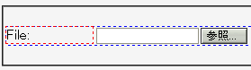
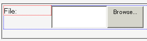

2003-03-22更新。回避方法のひとつが使用不能になりました。
ウィンドウの高さをドラッグで変化させていると、左フロートに回り込んでいるファイル選択コントロール（<input type="file">）の高さが大きくなってゆく。
※標準モードで発生する。ただし、TransitionalのDOCTYPEに適用される標準モードを除く。
<form action="#"> <div style="width:6em; float:left; border:1px dotted red;">File:</div> <div style="border:1px dotted blue;"><input type="file"></div> </form>
このページにはHTML4.01 StrictのDOCTYPE宣言を記しています。ウィンドウサイズをドラッグで数回変更してみてください。
これはリサイズ後の状態です。
WinIE6.0での表示（標準モード）
Moz1.0.2での表示（標準モード））
input要素にheightプロパティを指定（inherit, autoを除く）するか、line-heightプロパティ（inherit, normalを除く）を指定すればこのバグを回避できます。Mozilla1.3ではline-heightの指定によるバグ回避ができません。
<form action="#"> <div style="width:6em; float:left; border:1px dotted red;">File:</div> <div style="border:1px dotted blue;"><input type="file" style="height:1.6em;"></div> </form>
Moz1.0.2/1.2.1では標準モードで不具合の発生が確認されました。Transitional DOCTYPE用標準モードと互換モードではこの不具合は発生しませんでした。